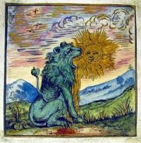
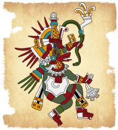
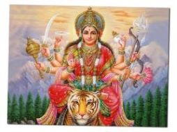
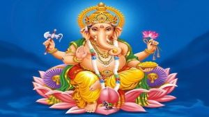
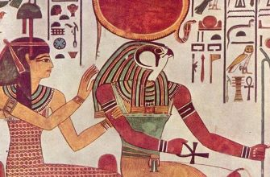
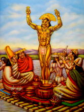
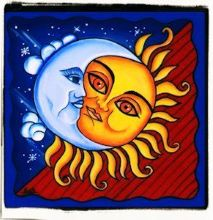
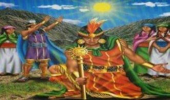

Sumérgete en el fascinante mundo de los mitos y leyendas de los eclipses solares, una maravilla celestial que ha cautivado a la humanidad desde tiempos inmemoriales. Explora las mitologías y leyendas alrededor de este fenómeno astronómico, donde dioses y criaturas se entrelazan en un baile cósmico lleno de misterio y significado.
Los mexicanos suponían que algún ser sobrenatural devoraba o comía el Sol o la Luna.
La creencia de que si el Sol era devorado por completo ya nunca más alumbraría dio lugar a que
se intentara impedir tal desastre con sacrificios de víctimas humanas, especialmente de pelo blanco y
caras blancas como el Sol, o automortificaciones.
Se pensaba que era un dragón el que devoraba el Sol durante los eclipses.
Por esta razón, tenían rituales ceremoniales que realizaban durante los eclipses,
donde solían hacer sonar sus tambores y lanzar flechas hacia el cielo para
detener el ataque de la criatura.
La Luna era la copa en la que los dioses bebían el amrita, elixir de la inmortalidad.
Y los eclipses se producían cada vez que el monstruo Rahó conseguía atraparla para beberse el brebaje mágico.
Pero como Rahó no tenía vientre, la Luna podía escapar de nuevo y seguir su curso.
Cuando se producía un eclipse, era porque el Sol era atacado y devorado.
Cuando reaparecía, según su creencia, era un Sol nuevo, una reencarnación del antiguo.
Una cultura precolombina mexicana, los eclipses se producían únicamente cuando el Sol, Zuhé, y la Luna se enojaban.
Los eclipses totales de Sol tenían lugar cada vez que nuestro satélite y el Sol hacían el amor.
Por ello, este acontecimiento era motivo de celebración para los indígenas.
